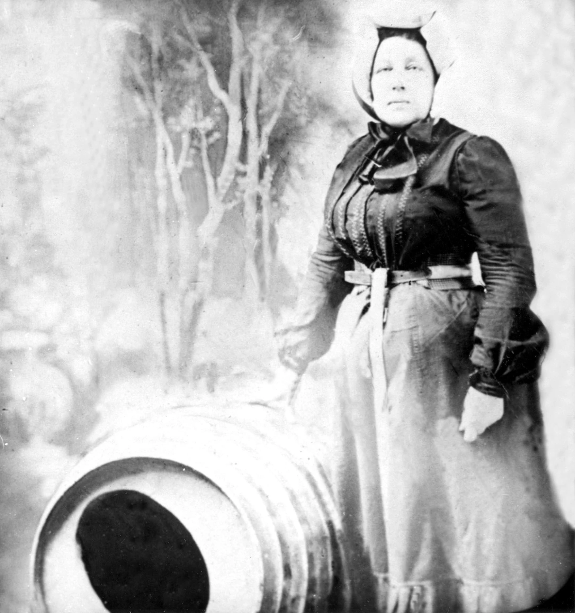

<!-- Página web sobre las Cataratas del Niagara (Canadá - EEUU) -->

<!DOCTYPE html>
<!-- Lenguaje de la página -->
<html lang="es"></html>
<html>
<head>
  <!-- Codificación de la página -->
  <meta charset="UTF-8">
  <!-- Título de la página -->
	<title>Las grandiosas Cataratas del Niagara</title>
  <!-- Estilos de la página (Referencia al archivo css de estilos para la página) -->
	<link rel="stylesheet" type="text/css" href="estilos.css">
</head>
<!-- Cuerpo de la página -->
<body>
  <!-- Top de la página (Título contenido en un frame) -->
  <div class="Titulo">
    <header class="Titulo1">
        <h1>Las grandiosas <br>Cataratas del Niagara</h1>
        <h2>Un lugar donde se puede <br>apreciar la majestuosidad de la naturaleza</h>
    </header>
  </div>

  <section>
    <div class="Botones">
      <!-- Botones de navegación -->
      <!-- Cada botón redirecciona a una página diferente -->
      <button class="button" onclick="window.location.href='Ubicacion.html'">Ubicación</button>
      <button class="button" onclick="window.location.href='Personajes que lo habitan.html'">Personajes que lo habitan</button>
      <button class="button" onclick="window.location.href='Actividades.html'">Actividades</button>
      <button class="button" onclick="window.location.href='Historia.html'">Historia</button>
      <button class="button" onclick="window.location.href='Referencias.html'">Referencias</button>
      <button class="button" onclick="window.location.href='Index.html'">Pág. Principal</button>
    </div>
  </section>
  
  <section>
    <div class="imagenes">
      <figure>
        
        <figcaption>Vista aérea de las Cataratas del Niagara</figcaption>
      </figure>
      <figure>
        
        <figcaption>Vista senital de las Cataratas del Niagara</figcaption>
      </figure>
      <figure>
        
        <figcaption>Turismo por bote</figcaption>
      </figure>
      <figure>
        
        <figcaption>Puesto de turismo</figcaption>
      </figure>
    </div>
  </section>
    <div class="ContenidoH">
      <p>Como se mencionó en la página principal las Cataratas del Niagara son un conjunto de cascadas que conforman un hermoso paisaje digno de admirar, es por eso que se han convertido en uno de los sitios más visitados tanto de Estados Unidos como de Canadá. Las cataratas del Niágara son un fenómeno natural impresionante que se encuentra en la frontera entre Canadá y Estados Unidos. Las cataratas se originaron hace unos 10.000 años durante la última glaciación continental, cuando un gran glaciar avanzó hacia el este de Canadá y moldeó la región de los Grandes Lagos y el río Niágara. Como resultado, el río se desplomó desde una altura de más de 50 metros en una garganta profunda, creando las impresionantes cataratas que se pueden ver hoy en día.<br><br>Las cataratas del Niágara han sido un punto de referencia importante en la historia de América del Norte desde la época precolombina, y han atraído a visitantes y exploradores durante siglos. En la década de 1800, la región se convirtió en un destino turístico popular, y se construyeron hoteles, casinos y atracciones para atender a los visitantes.<br><br>Hoy en día, las cataratas del Niágara siguen siendo una atracción turística mundialmente conocida, y se estima que más de 30 millones de personas visitan la región cada año. La vista panorámica de las cataratas es impresionante, pero también hay muchas otras actividades para hacer en la zona, como un paseo en bote en las cataratas, un recorrido detrás de las cataratas, y una variedad de atracciones y entretenimiento en los pueblos cercanos. Las cataratas del Niágara son un testimonio impresionante de la historia geológica de América del Norte y continúan siendo un destino turístico popular para visitantes de todo el mundo.</p>
    </div>
	</section>
    <section>
        <table class="Tabla_historia">
            <tr>
                <td>
                    <!-- Historia de Annie, la primera en saltar a las cataratas-->
                    <p>Annie Edson Taylor se convirtió en la primera persona en lanzarse por las cataratas del Niágara en un barril el 24 de octubre de 1901. A la edad de 63 años, Taylor decidió realizar esta peligrosa hazaña con la esperanza de obtener fama y fortuna. Su barril de madera medía 1,5 metros de altura y 91 centímetros de diámetro, y estaba equipado con cojines para amortiguar el impacto. El día del lanzamiento, Taylor se metió en el barril junto con su gato negro llamado 'Iagara', y fue sellada dentro con la tapa de metal. Luego, el barril fue remolcado río arriba por un bote y soltado a las cataratas. El barril se sumergió en la piscina inferior después de caer más de 50 metros a través de las cataratas. Los espectadores pensaron que Taylor había muerto, pero después de 20 minutos, el barril se recuperó y Taylor emergió ilesa, excepto por algunos cortes y moretones.<br><br>A pesar de sobrevivir, la hazaña no le proporcionó la fama y fortuna que esperaba. Taylor murió pobre en un hogar de ancianos a los 82 años. Su hazaña ha sido recordada como un momento histórico en las cataratas del Niágara, y ha inspirado a otros a realizar peligrosos intentos de conquistar las cataratas.<br><br>NOTA: El barril de Taylor se encuentra en exhibición en el Museo de Historia Natural de Niagara Falls, Canadá. Si quieres conocer más de la historia de las cataratas del Niágara, te invito a visitar el siguiente link <a href="https://www.wbfo.org/heritage-moments/2018-10-22/heritage-moments-annie-edson-taylor-falls-daredevil-and-a-widows-hard-choices"> (Historia de la hazaña de Annie Taylor).</a>
                    </p>
                </td>
                <td>
                    <!-- Imagen de Annie Taylor -->
                    <figure>
                        
                        <figcaption>Annie Taylor junto al barril donde se lanzó</figcaption>
                    </figure>
                </td>
            </tr>
        </table>
    </section>

	<footer class="Footer">
		<p>Creado por: Jeferson Yesid Gonzalez Ortiz | Cod: 319019 | jegonzalezor@unal.edu.co | Curso: Gráfica Interactiva | Derechos reservados &copy; 2023</p>
	</footer>
</body>
</html>
